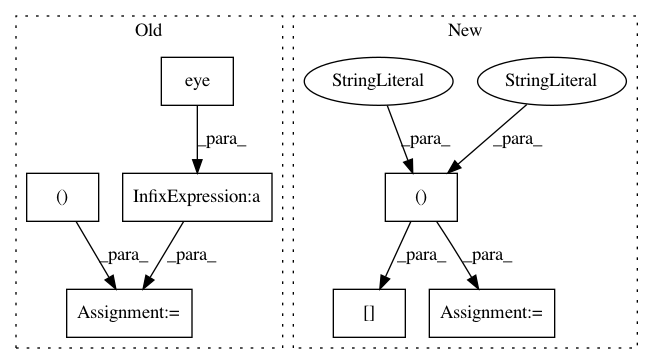

3b7c9ec865c02888620cdf215e61c616e1dcc7a2,linearmodels/tests/iv/test_model.py,,data,#,19
Before Change
np.random.seed(12345)
clusters = np.random.randint(0, 10, n)
rho = 0.5
r = np.zeros((k + p + 1, k + p + 1))
r.fill(rho)
r[-1, 2:] = 0
r[2:, -1] = 0
r[-1, -1] = 0.5
r += np.eye(9) * 0.5
v = np.random.multivariate_normal(np.zeros(r.shape[0]), r, n)
x = v[:, :k]
z = v[:, k : k + p]
e = v[:, [-1]]
After Change
params = np.arange(1, k + 1) / k
params = params[:, None]
y = x @ params + e
exog_instr = np.column_stack((x[:, q:], z))
xhat = exog_instr @ np.linalg.pinv(exog_instr) @ x
nobs, nvar = x.shape
s2 = e.T @ e / nobs
s2_debiased = e.T @ e / (nobs - nvar)
In pattern: SUPERPATTERN
Frequency: 3
Non-data size: 7
Instances
Project Name: bashtage/linearmodels
Commit Name: 3b7c9ec865c02888620cdf215e61c616e1dcc7a2
Time: 2021-01-06
Author: kevin.k.sheppard@gmail.com
File Name: linearmodels/tests/iv/test_model.py
Class Name:
Method Name: data
Project Name: SheffieldML/GPy
Commit Name: 17bfccb45736a1877779218b43791de4e56a3a5e
Time: 2016-05-06
Author: ibinbei@gmail.com
File Name: GPy/kern/src/stationary.py
Class Name: Stationary
Method Name: gradients_XX
Project Name: fgnt/nara_wpe
Commit Name: 171afc33723ad7f0a061131ad85041cdf8f305e5
Time: 2017-06-28
Author: ldrude@mail.uni-paderborn.de
File Name: nara_wpe/wpe.py
Class Name:
Method Name: get_filter_matrix_conjugate_v3